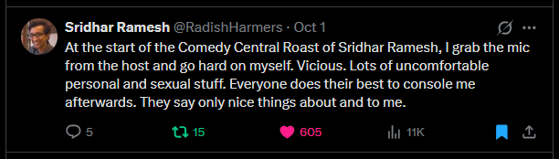

Washed ashore from my period of relative insanity tonight. I was playing some Clone Hero, as I do, a lot, in the moment where it happened I was playing a chart of Weird Fishes / Arpeggi. And it hit me that I was myself again, a fucking, a cool wave.
I had a call with my friend last night, from my hometown. "Last night" it was from 2 to 7 AM, last morning. We just talked for 5 hours. Ran some bits. Talked about how there was no hope — except voting! Just one more election, bro. I showed him the video of the New York Gay Men's Choir singing Golden but they're going "vote vote vote" and his first reaction was going "why are they so gay?" without realizing it was the Gay Men's Choir. Hardest I've laughed in months, sweating unable to breathe. By any votes necessary.
"All of the guys tell me lies, but you don't
You just crack another beer
And pretend that you're still here"
...
"I know he's in over his head
But I love that man like nobody can
He moves mountains and pounds them to ground again"
I love him. To the level where I think of him and my head fills with the Lana Del Rey songs I used to listen to back in 2020, when we'd talk every day a year straight. We haven't talked in weeks, last time we did I told him I still loved him and he was like "yeah I know, I'm not though". Not why we haven't talked in weeks though — we go months without talking sometimes, for no reason at all. But he recentered me yesterday, like only he can.
He's completely given up on love and life for climate crisis reasons. He's that guy at the beginning of First Reformed who shoots himself in the head with a gun later in the movie. Spoilers for First Reformed, maybe the best film of the 2010s, unfortunately by an extremely evil man. He's getting a civil engineering undergraduate degree, originally an environmental engineering degree. And yeah he's like the one guy I can talk to about everything terrible in my life and he gets it like "yeah". He talks about it with me, too, and I'm the only other person that's like "yeah". There ain't hope. Have to keep living unless you kill yourself. He's also like agender so, he gets that shit. He gets it. He just gets it.
Thinking he might be my soulmate. I finished Beautiful World, Where Are You. Maybe he's my soulmate and it'll just never happen. I redownloaded Scruff, and before realizing it was a massive mistake, got messaged by a guy whose name I don't even know because his display name is :3. We've been talking. He's a take me to your weeder type guy, 27, just interviewed at Barnes and Noble, plays OSRS and Deadlock. We haven't met up for a coffee shop date yet. Maybe we never will. But after talking with him for like ten seconds I realized that redownloading Scruff was a massive mistake, and since then have insta-blocked everyone who has liked or messaged me. And if this thing doesn't work out, then I'm deleting it again. For Good, I hope, I say because I can't assure I'll not hit the depths of loneliness again in due time.
Talked with my friend about this. And of my dream on Sunday — nowhere near the worst, but a cruel one. Netanyahu joined RFCK and for some governmental reason we couldn't ban him, so he !revived the place in the worst way possible and there was nothing I could do. And also he was in a sexual relationship with the man I find the hottest on planet Earth? 83laith on Instagram, for those asking. Ah, the profile is private. A shame for all of you that don't follow him. Anyways yeah I had to see Netanyahu get smothered by his chest and massive belly. God.
"In my wildest sexual dreams I dream
That I'm watching porn, but there's too much sunlight
Shining on my laptop monitor, so I
Can't see anything with any amount of clarity"
So yeah I had a dream where I got cucked by Benjamin Netanyahu. Be in my shoes a second! Friend found it hilarious.

Saturday it was quite bad though. Went from worse to worser. I went to a bar to see an acquaintance's band perform, and ended up talking to a guy out behind it for about an hour. "Morgan", his name, which I say in a weird way because he got in a real weird way about my name being A.J. but my legal name being a different name, but that A.J. wasn't a nickname but just what my name has been since birth. Think he'd go insane if he learned that I have other names, like Zug, that are equally just names! Everybody knows you have your biological name that you are assigned at birth that follows you for the rest of your life, that's how the world works. Anyways, ignoring this, we had a pretty good conversation (alongside Nate and Alma, who came by and left) until randomly he revealed he worked at IBM as an AI guy doing AI stuff. And then he started talking down to me, about agentic shit, like I don't pay attention to the news. He kept trying to convince me that I needed to use AI agents in my workflow and I just kept deferring like "yeah uhhh I just don't really have any place for them, I like the things I do" but he would NOT take that for a fucking answer. Very unfortunate end to an alright conversation that just threw me into a mess. What burns so bright in my mind: he had 300k in unvested stock and ended the conversation with "I can't afford to be moral right now". Man. Complained he only got 10k in stock every 3 months instead of 15k because of Trump.
That sent me kind of spiraling. Funnily enough about Krak, he talked like Krak when it came to his job, and also when he was talking down to me about how he got put into the AI division because of corporate merger stuff I was like "oh I know, the guy who groomed me had that happen". I didn't even put the "lowkey platonically" beforehand like I do as a mantra. Just flowed from me. Anyways I had the hardest Krak breakdown I've had in months all Sunday morning and evening, just howling crying hyperventilating crying. Sometimes you meet a guy who is like 30% the guy who platonically groomed you and it's like. Man.
Ended up skipping class on Monday I was so deep in the, uh, suicidality, I guess. Just couldn't manage existing. Went to a Caribou Coffee that morning to read Middlemarch, as I've gotta for class, and in the store some old guy was talking about AI podcasts he was creating. What a terrible world we live in! I don't know why I thought it would be less painful to live through a period of mass devaluing of human labor.
Went to see my friends perform last night, at 331, Alma and Girdle of Judith again, opening for my friends Hayley and Morgan of Ditch Pigeon (there are two Morgans in this story). Good fucking shit, great fucking shit, I cannot wait for the album. There was a moment when you're in a room and it's a bunch of people you've just kind of met from the past year and a half of your life, and you know them and they know you, and. What a moment.
And then Nate, I think, yelled about how we all need to vote at the end of the month. Just one more ballot! Though I should actually probably register to vote in Minnesota now that I live here.